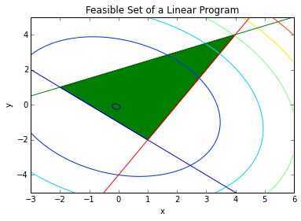
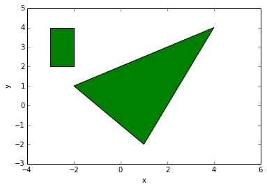

Quadratic program¶
A quadratic programming (QP) optimization problem is described as:
\(P\) is assumed to be positive semidefinite. The feasible set of QP is a polygon and the objective function is a convex quadratic function.
If the objective function is quadratic and the constraints include quadratic constraints, then we have a quadratically constrained quadratic program (QCQP):
where \(P_i\) for \(i=0,\cdots,m\) are positive semidefinite.
Example: Consider the set of linear equations \(Ax=b\) for the case when \(A\) has more rows than columns. Finding an \(x\) where the equality is exactly satisfied is in general impossible. However, there is a solution for an \(x\) that minimizes the cost function \(e^\text{T}e\) where \(e=Ax-b\). The solution is even analytic and it can be written as: \begin{equation} x^\star = (A^\text{T}A)^{-1}A^\text{T} \end{equation} However, after adding linear constraints on \(x\), the optimization problem does not have an analytic solution:
As a numerical example, consider:
The analytical answer to \(Ax=b\) is computed as:
A = np.array([[1,1],[2,1],[3,2]])
b = np.array([[2], [3], [4]])
xs = np.dot(np.linalg.pinv(A),b)
print(xs)
[[ 1. ]
[ 0.66666667]]
A similar result can be reached by solving the following QP problem:
A = co.matrix(A)
b = co.matrix(b)
x = cp.Variable(2)
I = np.identity(3)
objective = cp.Minimize( cp.quad_form(A*x-b, I) )
p = cp.Problem(objective)
The optimal value of the objective function is:
result = p.solve()
print(result)
0.333333326323
and the optimal solution is:
print(x.value)
[ 1.00e+00]
[ 6.67e-01]
Now, we can add linear constraints and find the optimal solution by solving the QP problem:
x = cp.Variable(2)
objective = cp.Minimize( b.T*b - 2*b.T*A*x + cp.quad_form(x, A.T*A) )
constraints = [ -0.9 <= x <= 0.9]
p = cp.Problem(objective, constraints)
The optimal cost function is equal to:
result = p.solve()
print(result)
0.33838157573
which is more than what it was without the linear constraints. The optimal solution is equal to:
print(x.value)
[ 9.00e-01]
[ 8.18e-01]
Example (Linear Program with a Stochastic Objective Function): Consider a random vector \(c\) and the following LP problem: \begin{align} \text{minimize }&c^\text{T}x\nonumber\ \text{subject to }& Gx \preccurlyeq h \nonumber\ & Ax = b \end{align} Assume that \(c\) is a random vector with the normal distribution of \(\mathcal{N}(\bar c,\Sigma)\). Also we assume that \(x\), the unknown vector, is deterministic. With this assumptions, the objective function \(c^\text{T}x\) is a normal random variable with mean \({\bar c}^\text{T}x\) and variance \(x^\text{T}\Sigma x\).
One way to formulate the problem so that it is practically solveable is to set the objective function as: \begin{equation} {\bar c}^\text{T}x+\gamma x^\text{T}\Sigma x \end{equation} where \(\gamma\geq 0\). This objective function is called the risk-sensitive cost and \(\gamma\) is call the risk-aversion parameter. The larger \(\gamma\) is, the more the uncertainty of the original objective function is penalized and it thus leads to a more certain result. With this approach, the problem is formulated as the following deterministic LP: \begin{align} \text{minimize }&{\bar c}^\text{T}x+\gamma x^\text{T}\Sigma x\nonumber\ \text{subject to }& Gx \preccurlyeq h \nonumber\ & Ax = b \end{align} As a numerical example, let us consider an uncertain version of ref{LP2}: \begin{align} \bar c=&\bmat{c} 22\ 14.5 \emat \nonumber\ \Sigma=&\bmat{ccc} 5 & 1\ 1 & 4 \emat\nonumber\ G =&\bmat{cc} -1 & -1\ -0.5 & 1\ 2 & -1 \emat \nonumber\ h =&\bmat{c} 1\2\4\emat \end{align}
Now, the optimization can be solved with the following code:
Sigma = co.matrix([ 5, 1,
1, 4,], (2,2))
cb = co.matrix([1, 1], (2,1))
G = co.matrix([ -1, -0.5, 2,
-1, 1, -1], (3,2))
h = co.matrix([ 1,
2,
4],(3,1))
gamma = 0.5
x = cp.Variable(2)
objective = cp.Minimize( cb.T * x + gamma * cp.quad_form(x, Sigma) )
constraints = [ G*x <= h ]
p = cp.Problem(objective, constraints)
The optimal value of the objective function is:
result = p.solve()
print(result)
-0.184210521637
The optimal solution, in this case, is inside of the feasible set:
print(x.value)
[-1.58e-01]
[-2.11e-01]
In the following figure, the feasible set and the contours of the objective function are drawn.
xp = np.array([-3, 6])
# plot the constraints
plt.plot(xp, -xp-1, xp, 0.5*xp+2, xp, 2*xp-4)
# Draw the feasible set (filled triangle)
path = mpl.path.Path([[4, 4], [1, -2], [-2, 1], [4, 4]])
patch = mpl.patches.PathPatch(path, facecolor='green')
# Add the triangle to the plot
plt.gca().add_patch(patch)
plt.xlabel('x')
plt.ylabel('y')
plt.title('Feasible Set of a Linear Program')
plt.xlim(-3,6)
plt.ylim(-5,5)
delta = 0.025
xc = np.arange(-3.0, 6.0, delta)
yc = np.arange(-5.0, 6.0, delta)
X, Y = np.meshgrid(xc, yc)
Z = cb[0]*X + cb[1]*Y + Sigma[0,0]*X*X + 2*Sigma[0,1]*X*Y + Sigma[1,1]*Y*Y
plt.contour(X, Y, Z)
X, Y = np.meshgrid(x, y)
plt.show()

Example (Distance between polyhedra): Consider the following two polyhedra: \begin{equation} \mathcal{P}_1={x| A_1x \preccurlyeq b_1},\ \mathcal{P}_2={x| A_2x \preccurlyeq b_2} \end{equation} The distance between \(\mathcal{P}_1\) and \(\mathcal{P}_2\) is defined as: \begin{equation} \text{d}(\mathcal{P}_1,\mathcal{P}_2)=\inf{|x_1-x_2|_2 | x_1\in\mathcal{P}_1,\ x_2\in\mathcal{P}_2} \end{equation} This ditance can computed using the following QP problem: \begin{align} \text{minimize }& |x_1-x_2|_2^2\nonumber\ \text{subject to }&A_1x \preccurlyeq b_1 \nonumber\ &A_2x \preccurlyeq b_2 \end{align} As a numerical example, consider the following polygons:
# Draw the triangle
path = mpl.path.Path([[4, 4], [1, -2], [-2, 1], [4, 4]])
patch = mpl.patches.PathPatch(path, facecolor='green')
# Add the triangle to the plot
plt.gca().add_patch(patch)
# Draw the rectangle
path = mpl.path.Path([[-3, 4], [-2, 4], [-2, 2], [-3, 2], [-3, 4]])
patch = mpl.patches.PathPatch(path, facecolor='green')
# Add the rectangle to the plot
plt.gca().add_patch(patch)
plt.xlabel('x')
plt.ylabel('y')
plt.xlim(-4,6)
plt.ylim(-3,5)
plt.show()

The distance between these two polygons is computed with the following QP optimization problem:
x1 = cp.Variable(2)
x2 = cp.Variable(2)
I = np.identity(2)
# Triangle
A1 = co.matrix([ -1, -0.5, 2,
-1, 1, -1], (3,2))
b1 = co.matrix([ 1,
2,
4],(3,1))
# Rectangle
A2 = co.matrix([ -1, 1, 0, 0,
0, 0, -1, 1], (4,2))
b2 = co.matrix([ 3,
-2,
-2,
4],(4,1))
objective = cp.Minimize( cp.quad_form(x1-x2, I) )
constraints = [ A1*x1<= b1, A2*x2<=b2]
p = cp.Problem(objective, constraints)
The distance between the two polygons is:
result=p.solve()
print(result)
0.799999994069
The correspondin point in the triangle is:
print(x1.value)
[-1.60e+00]
[ 1.20e+00]
and the corresponding point in the rectangle is:
print(x2.value)
[-2.00e+00]
[ 2.00e+00]